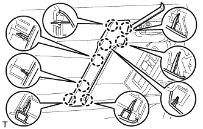
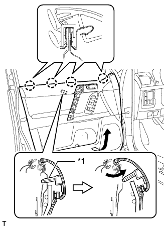
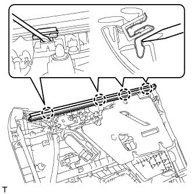
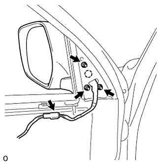
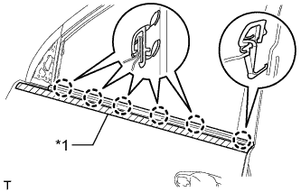

МОЛДИНГ РАМЫ ОКНА ПЕРЕДНЕЙ ДВЕРИ > СНЯТИЕ |
| Параметр / Устройство | Температура |
| Кузов автомобиля | 40-60°C (104-140°F) |
| Молдинг рамы окна | 20–30°C (68–86°F) |
| 1. ОТСОЕДИНИТЕ ПРОВОД ОТ ОТРИЦАТЕЛЬНОГО ВЫВОДА АККУМУЛЯТОРНОЙ БАТАРЕИ |
| 2. СНИМИТЕ ОБЛИЦОВКУ КРОНШТЕЙНА НИЖНЕЙ РАМЫ ЛЕВОЙ ПЕРЕДНЕЙ ДВЕРИ |
 |
Отсоедините 2 фиксатора и снимите облицовку кронштейна нижней рамы левой передней двери.
| 3. СНИМИТЕ ДЕРЖАТЕЛЬ ВНУТРЕННЕЙ РУЧКИ ЛЕВОЙ ДВЕРИ № 2 |
 |
С помощью съемника молдингов освободите 3 захвата и снимите оправу внутренней ручки, как показано на рисунке.
| 4. СНИМИТЕ ЛЕВУЮ НАКЛАДКУ ВЕРХНЕГО ПОРУЧНЯ |
|  |
С помощью съемника молдингов А освободите 8 захватов и снимите крышку верхнего поручня.
| 5. СНИМИТЕ ПАНЕЛЬ ОБЛИЦОВКИ ЛЕВОЙ ПЕРЕДНЕЙ ДВЕРИ В СБОРЕ |
 |
Выверните 3 винта.
Снимите 12 фиксаторов.
|  |
Вытяните панель облицовки передней двери в сборе в направлении, указанном стрелкой на рисунке.
| *1 | Базовый выступ |
Поднимите панель облицовки передней двери в сборе, чтобы освободить 4 захвата, и снимите панель облицовки передней двери в сборе вместе с внутренним уплотнителем стекла левой передней двери.
 |
Отсоедините 2 разъема.
Для моделей с запоминающими устройствами сидений:
 |
Отсоедините разъемы.
 |
Отсоедините трос дистанционного управления замком передней двери в сборе и внутренний трос замка передней двери в сборе.
| 6. СНИМИТЕ ВНУТРЕННИЙ УПЛОТНИТЕЛЬ СТЕКЛА ЛЕВОЙ ПЕРЕДНЕЙ ДВЕРИ |
|  |
С помощью отвертки освободите 4 захвата и снимите внутренний уплотнитель стекла передней двери с панели облицовки передней двери в сборе, как показано на рисунке.
| 7. СНИМИТЕ КРЫШКУ ТЕХНОЛОГИЧЕСКОГО ОТВЕРСТИЯ ЛЕВОЙ ПЕРЕДНЕЙ ДВЕРИ |
 |
Выверните болт.
Освободите 2 зажима, переместите жгут проводов, чтобы он не мешал, и снимите крышку технологического отверстия.
| 8. СНИМИТЕ ЛЕВОЕ НАРУЖНОЕ ЗЕРКАЛО ЗАДНЕГО ВИДА В СБОРЕ |
|  |
Отсоедините разъем.
Отверните 3 гайки.
Освободите захват и снимите наружное зеркало заднего вида.
| 9. СНИМИТЕ СТЕКЛО ЛЕВОЙ ПЕРЕДНЕЙ ДВЕРИ В СБОРЕ |
Подсоедините провод к отрицательному (-) выводу аккумуляторной батареи.
Подсоедините главный выключатель электрических стеклоподъемников в сборе и сместите стекло передней двери таким образом, чтобы показались болты стекла двери.
Отсоедините провод от отрицательного (-) вывода аккумуляторной батареи и снимите главный выключатель электрических стеклоподъемников в сборе.
 |
Выверните 2 болта.
 |
Извлеките стекло передней двери в направлении, указанном на рисунке стрелками, и в порядке, показанном на рисунке.
| 10. СНИМИТЕ НАПРАВЛЯЮЩУЮ СТЕКЛА ЛЕВОЙ ПЕРЕДНЕЙ ДВЕРИ |
 |
Снимите направляющую стекла передней двери.
| 11. СНИМИТЕ МОЛДИНГ РЕМНЯ ЛЕВОЙ ПЕРЕДНЕЙ ДВЕРИ |
|  |
Наложите защитную клейкую ленту вокруг молдинга ремня.
Освободите 6 захватов и снимите молдинг ремня передней двери.
| *1 | Защитная клейкая лента |
| 12. СНИМИТЕ УПЛОТНИТЕЛЬ ЛЕВОЙ ПЕРЕДНЕЙ ДВЕРИ |
 |
Освободите 3 фиксатора и снимите верхнюю часть уплотнителя передней двери, чтобы появилась возможность снять молдинг.
| 13. СНИМИТЕ ЗАДНИЙ МОЛДИНГ РАМЫ ОКНА ЛЕВОЙ ПЕРЕДНЕЙ ДВЕРИ |
 |
Снимите фиксатор молдинга рамы окна двери.
 |
Наклейте защитную ленту вокруг молдинга задней рамы окна передней двери.
С помощью съемника молдингов освободите фиксатор и снимите двухстороннюю клейкую ленту, чтобы снять задний молдинг рамы окна передней двери.
| *1 | Защитная клейкая лента |
| *2 | Двухсторонняя клейкая лента |
| *3 | Съемник молдингов |